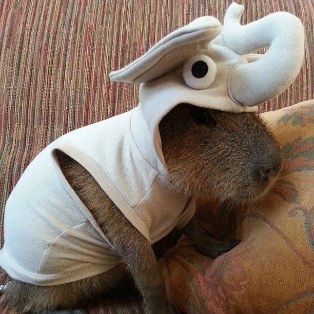
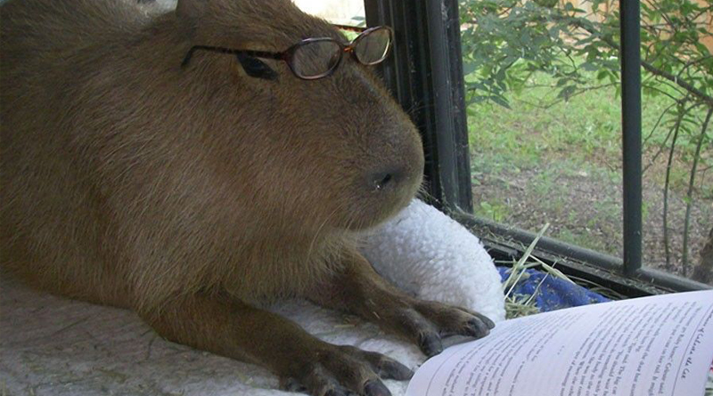
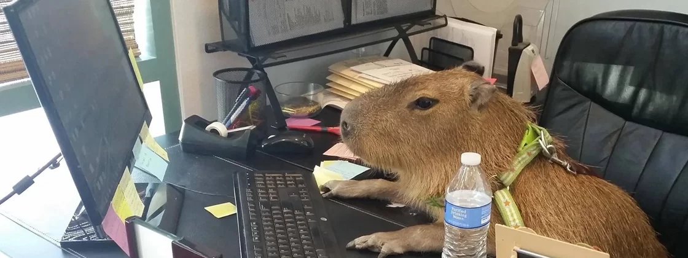

A capivara ou capincho é uma espécie de mamífero roedor da família Caviidae e subfamília Hydrochoerinae. Alguns autores consideram que deva ser classificada em uma família própria. Está incluída no mesmo grupo de roedores ao qual se classificam as pacas, cutias, os preás e o porquinho-da-índia. A capivara é um animal mamífero que vive em grupos. Destaca-se por possuir corpo robusto, musculoso e coberto por uma pelagem, geralmente, marrom. As capivaras (Hydrochoerus hydrochaeris) são mamíferos herbívoros que se destacam por levarem o título de maior roedor do mundo. Esses animais apresentam um corpo robusto e musculoso coberto por pelos marrom-escuros e podem atingir cerca de 1,3 m de comprimento e 60 cm de altura. Seu peso varia, e esses mamíferos apresentam, em média, de 20 kg a 80 kg.
→ Características da capivara As capivaras são animais calmos e mansos, nativos da América do Sul. Vivem em locais próximos ao ambiente aquático, pois precisam da água para várias de suas atividades, como esconder de predadores e reproduzir-se. Dizemos que esse mamífero possui um hábito semiaquático. Esses animais vivem em grupos que variam de tamanho e apresentam organização social. A quantidade de capivaras nos grupos varia de 2 a 30 animais, apresentando um macho dominante. Além do macho dominante, observa-se a presença de várias fêmeas e de indivíduos mais jovens. A maturidade sexual do macho e da fêmea é atingida em idades diferentes. Enquanto o macho atinge a maturidade entre 15 e 24 meses de idade, as fêmeas alcançam essa maturidade com idade entre 10 e 12 meses. A reprodução da capivara acontece geralmente na água, na região mais rasa. As capivaras possuem uma alta taxa de fecundidade e de fertilidade. Sua gestação dura aproximadamente 120 dias, e as capivaras fêmeas dão à luz, em média, três filhotes. Esses animais são herbívoros e pastam, principalmente, ao entardecer. Alimentam-se de gramíneas e até mesmo de plantas aquáticas. Capivaras adultas podem comer mais de 5 kg de comida, dependendo de seu tamanho.
→ Curiosidades sobre a capivara Veja a seguir algumas curiosidades sobre a capivara:
• O gênero ao qual pertence a capivara (Hydrochoerus) está relacionado com os hábitos desse animal e significa “porco d'água”.
• O nome popular da capivara possui origem tupi-guarani e significa “comedor de capim”.
• Algumas capivaras podem atingir até 100 kg.
• Os dentes incisivos de uma capivara adulta podem ter de 5 cm a 6 cm.
• Muitos autores questionam se as capivaras possuem ou não rabo. Enquanto alguns afirmam que não, outros dizem que esses animais possuem um pequeno rabo encoberto por pelos.
• As patas traseiras da capivara são maiores que as dianteiras.
• A pele da capivara apresenta valor comercial e pode ser usada na indústria de couro.
• Na época da seca, as capivaras podem apresentar grupos de mais de 100 animais.
• As capivaras apresentam relação com uma doença chamada febre maculosa, que pode levar à morte. A relação está no fato de que as capivaras, algumas vezes, apresentam um carrapato chamado carrapato-estrela (Amblyomma cajennense), que é reservatório da bactéria Rickettsia rickettsii, causadora da febre maculosa. O homem, ao ser picado por um carrapato contaminado, pode desenvolver a doença. Leia mais a respeito: Febre Maculosa
• Atualmente, as capivaras estão na categoria “pouco preocupantes” na Lista Vermelha de Espécies Ameaçadas da União Internacional para a Conservação da Natureza e dos Recursos Naturais (IUCN). Isso significa que, na época atual, a espécie não apresentas grandes riscos de entrar em extinção.
 Nome científico: Hydrochoerus hydrochaeris Nível Trófico: Herbívoro Enciclopédia da Vida
Altura: 50 – 62 cm (Adulto, até à cernelha) Peso: 35 – 66 kg (Adulto)
 Período de Gestação: 130 – 150 dias Comprimento: 1,1 – 1,3 m (Adulto) Estado de Conservação: Pouco preocupante